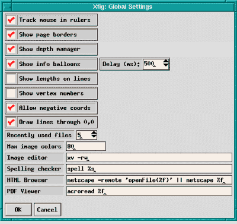
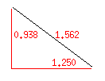
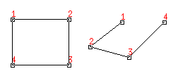

This panel, which may be popped up with the Global Settings menu item
in the Edit menu
or the keyboard accelerator Meta-G,
allows the user to change various settings in xfig.
-
 Track mouse in rulers
Track mouse in rulers
-
This option will cause xfig to show triangular pointers in the rulers
which indicate where the mouse is pointing on the canvas.
The initial setting can be set by
-track / -notrack option
or trackCursor resource.
-
Show depth manager
-
Display or hide the depth manager panel on the right-side of the xfig window.
See Depth Panel for details.
-
Show page borders
-
Xfig will draw a border on the canvas showing the size of the current page
setting (see Export
or Print) if this option is checked.
The initial setting can be set by
-showpageborder / -dontshowpageborder option
or showpageborder resource.
-
Show info balloons. delay(ms)
-
If this option is checked, xfig pops up a
``balloon'' with information
as the mouse passes over buttons or other areas of xfig. E.g.:
The delay tells xfig how long to wait (in milliseconds) after the mouse is positioned on
an area before popping up the balloon. The default is 500 ms.
The initial setting of Show info balloon can be set by
showballoons resource,
and initial setting of Delay (ms) can be set by
-balloons_delay option
or balloon_delay resource.
-
Show lengths on lines
-
If this is checked, xfig will show the lengths of lines as
they are being drawn, thus:

This option may also be turned on or off with the
-showlength/-dontshowlength
command-line option or showlength resource.
-
Show vertex numbers
-
If this is checked, xfig will show the number of each
vertex of objects on the canvas thus:

This is probably only useful for debugging of Fig files.
This option may also be turned on or off with the
-shownums/-dontshownums
command-line option or shownums resource.
-
Allow negative coords
-
If checked (the default), xfig will allow panning to negative
x and y coordinates. This also turns off the query about shifting
a figure with negative coordinates when loading a figure.
The initial setting can be set by
-allow_neg_coord / -dont_allow_neg_coord
option or allow_neg_coords resouce.
-
Draw lines through 0,0
-
If checked (the default), xfig will draw X and Y axis lines through
0,0 on the canvas
The initial setting can be set by
-draw_zero_lines / -dont_draw_zero_lines
option or draw_zero_lines resource.
-
Recently used files
-
This spinner entry lets the user set the number of recently used files that
are kept in the File menu. This is also updated in the user's .xfigrc
file in the user's home directory, as are the file names themselves.
-
Max image colors
-
This sets the maximum number of colors xfig will attempt to use
for imported images.
The default is 64 and may also be set with the
-max_image_colors
command-line option
or max_image_colors resource.
-
Image editor
-
This is the external program used when the
Edit Image button
is pressed in the import picture editor.
The default is xv .
You may use this program to crop/rotate/change colors in etc. your
imported image. When you exit from this program xfig will
re-import the image.
The initial setting can be set by
-image_editor option
or image_editor resource.
-
Spelling checker
-
This is the external spelling check program which will
be called when you use the spell check feature in xfig
(Spell Check... in the Edit menu,
or Meta-K accelerator).
The default is ``spell %f'',
but it can be changed with
-spellcheckcommand option
or spellcheckcommand resource.
The %f is necessary to tell xfig to insert the
filename into the spell command.
-
HTML Browser
-
This is the external web (HTML) browser that xfig will call to view help files.
The default is ``netscape -remote 'openFile(%f)' || netscape %f'',
it says to look for a running Netscape and open the pages in that.
If none is running, a new one will start.
The %f is necessary to tell xfig to insert the filename into the
browser command.
This can be set by browser resource.
-
PDF Viewer
-
This is the external PDF (Portable Document Format) viewer that xfig will
call to view the xfig tutorial.
The default is ``acroread %f'',
which will invoke Acrobat Reader.
The %f is necessary to tell xfig to insert the filename into the viewer command.
This can be set by pdfviewer resource.
[
Contents |
Introduction |
Credits ]